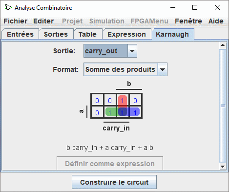

Analyse combinatoire

Tous les circuits appartiennent à l'une des deux catégories:
dans un circuit combinatoire, toutes les sorties du circuit sont strictement une combinaison des entrées du circuit. Alors que dans un circuit séquentiel, certaines sorties dépendent des entrées antérieures dans le temps (la séquence des entrées au cours du temps).
Les circuits de la catégorie combinatoire sont les plus simples des deux. Les professionnels utilisent trois techniques principales pour résumer le comportement de tels circuits.
- Des circuits logiques
- Des expressions booléennes, qui permettent une représentation algébrique du fonctionnement du circuit.
- Des tables de vérité qui énumèrent toutes les combinaisons des entrées possibles et des sorties correspondantes.
Le module d'Analyse Combinatoire permet de convertir une représentation dans n'importe laquelle des trois autres. Ceci est une façon particulièrement pratique de créer et comprendre des circuits avec un petit nombre d'entrées et de sorties à un bit.
Note : L'analyse combinatoire est désactivée dans Logisim-evolution. Il est possible de le réactiver avec une option en ligne de commande.
Ouvrir l'analyse combinatoire
Editer la table de vérité
Créer des expressions
Construire un circuit
Suite: Ouvrir l'Analyse Combinatoire.